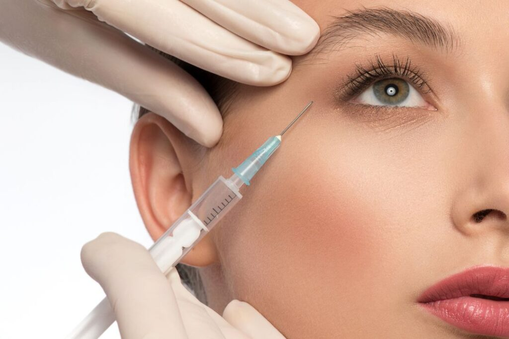
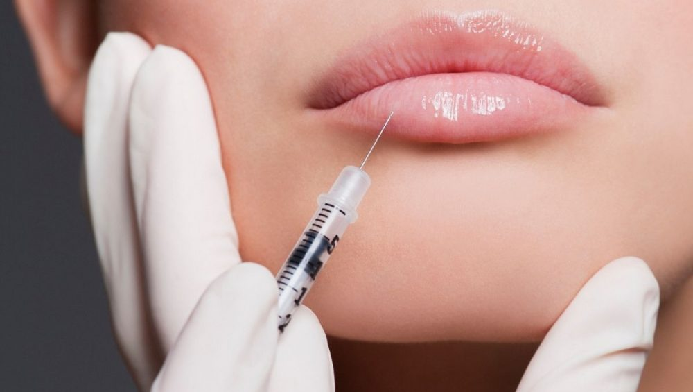
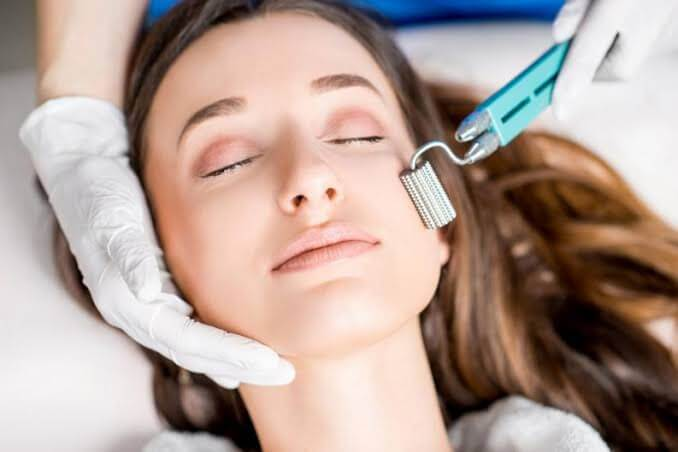
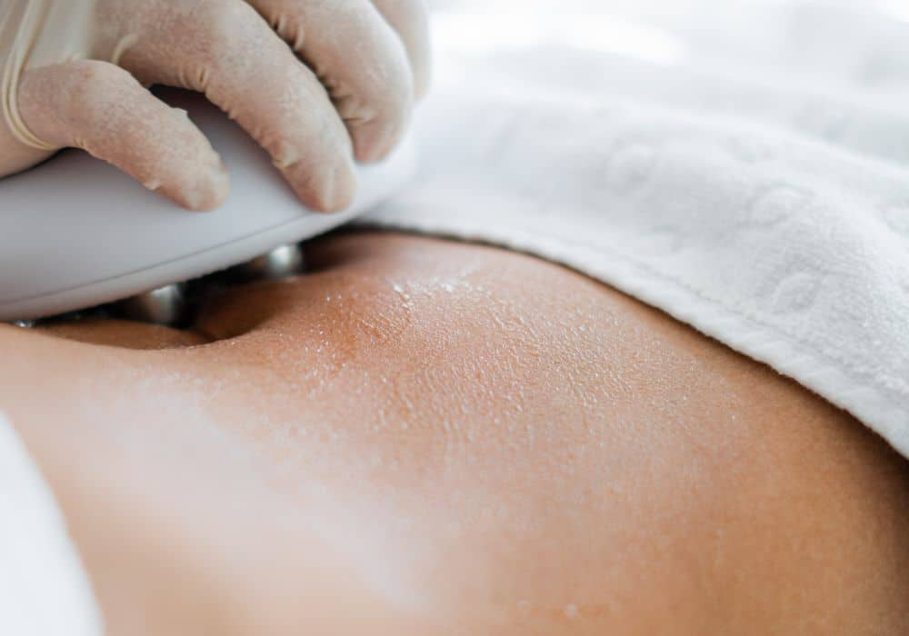

Harmonização Facial
 O procedimento tem o objetivo de melhorar o equilíbrio dos traços do rosto, deixando-o mais harmônico.
A Harmonização Facial é um procedimento indicado para homens e mulheres que desejam melhorar a aparência do rosto e consiste em um conjunto de diferentes procedimentos estéticos.
Ele têm como objetivo melhorar o equilíbrio entre determinadas regiões do rosto, como o nariz, queixo e dentes, deixando-o mais harmônico.
Ganhou destaque nos últimos anos pelo número crescente de celebridades que o realizaram.
O procedimento tem o objetivo de melhorar o equilíbrio dos traços do rosto, deixando-o mais harmônico.
A Harmonização Facial é um procedimento indicado para homens e mulheres que desejam melhorar a aparência do rosto e consiste em um conjunto de diferentes procedimentos estéticos.
Ele têm como objetivo melhorar o equilíbrio entre determinadas regiões do rosto, como o nariz, queixo e dentes, deixando-o mais harmônico.
Ganhou destaque nos últimos anos pelo número crescente de celebridades que o realizaram.
Toxina Botulínica

A Toxina Botulínica, conhecida popularmente como Botox, é um dos procedimentos estéticos mais famosos entre os pacientes.
Nele, são aplicadas injeções de toxina botulínica em pontos específicos do rosto. A substância paralisa a musculatura facial, impedindo a formação de linhas finas de expressão e rugas na testa, por exemplo.
A aplicação de botox costuma ter resultados satisfatórios para os pacientes, porém, os efeitos são temporários, necessitando de aplicações recorrentes.
Preenchimento Facial
 O Preenchimento Facial tem como objetivo preencher sulcos e depressões em diversas regiões do rosto, harmonizando proporções e contornos. Com ele, é possível diminuir efeitos das olheiras, do bigode chinês e maçã do rosto, entre outros, sem cirurgia.
Além disso, essa substância adapta-se bem ao organismo e, por ser um material biocompatível, apresenta pouca incidência de alergias ou complicações.
O Preenchimento Facial tem como objetivo preencher sulcos e depressões em diversas regiões do rosto, harmonizando proporções e contornos. Com ele, é possível diminuir efeitos das olheiras, do bigode chinês e maçã do rosto, entre outros, sem cirurgia.
Além disso, essa substância adapta-se bem ao organismo e, por ser um material biocompatível, apresenta pouca incidência de alergias ou complicações.
Preenchimento Labial

O preenchimento labial promove o aumento ou resgate do volume dos lábios.
Procedimento que se popularizou graças às celebridades e considerado altamente seguro, o Preenchimento Labial promove o aumento ou resgate do volume dos lábios de forma precisa e natural.
O procedimento, realizado com ácido hialurônico, tem finalidades de estética e traz mais harmonia e beleza à face, além de melhorar a hidratação labial.
Skinbooster
A aplicação de Skinbooster é um dos procedimentos estéticos mais buscados nos últimos tempos. Ele promove uma hidratação profunda no rosto o que favorece seu rejuvenescimento.
O material que melhora o aspecto da pele também estimula a produção de colágeno, deixando-a mais firme e radiante.
Microagulhamento

O Microagulhamento é um procedimento dermatológico baseado na utilização de diversas agulhas pequenas, as quais perfuram as camadas da pele, estimulando a formação do colágeno.
Pode ser utilizado em diversos tratamentos da pele, como, por exemplo, cicatrizes derivadas da acne, estrias, flacidez, calvície e até mesmo melasma.
Drenagem Linfática
A técnica de Drenagem Linfática oferece o bem-estar que o nosso organismo precisa para manter o bom funcionamento do sistema linfático e, por esse motivo, está no ranking dos procedimentos mais procurados pelos pacientes.
A drenagem linfática consiste na desobstrução dos ductos linfáticos, com manobras leves, onde são drenados os líquidos excedentes que circundam as células. Por isso, também se diz que reduz medidas quando a causa é o excesso de líquidos.
Radiofrequência

O procedimento de tensionamento cutâneo por radiofrequência utiliza a terapia por radiofrequência (RF) em seus tratamentos.
Este método não cirúrgico usa ondas de energia para aquecer a derme. Isso estimula a produção de colágeno, que é uma proteína comum encontrada no corpo do paciente e é responsável por fornecer uma aparência rígida e robusta.
A radiofrequência é utilizada para o esticamento da pele e também pode ser usada quando se trata de redução do tamanho das bolsas de gordura teimosas.